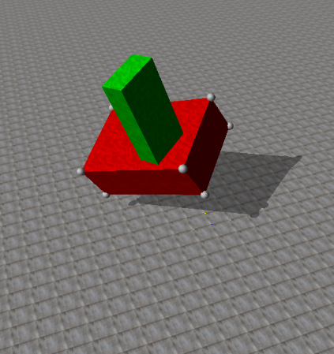
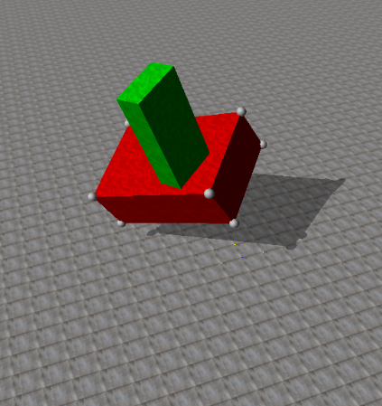

3D State Estimation and Control
Overview: This project deals with tracking/representing the 3D orientation and dynamics of an “alien artifact” tumbling through space. Given the 3D position of 8 markers, on the corners of the artifact, the goal is to estimate its dynamics and future trajectory. After predicting the artifact's pose as it tumbles through space, we will control a spacecraft to land on the surface of the artifact.
Source Code: https://drive.google.com/open?id=0B81gni53B9VOMUdBQ2FQLXFFUVk
Setup:
As described above, the goal of this project is to estimate the state and future trajectory of a rectangular object as it tumbles through space. In order to do so, all we are given a text file containing 10 seconds of position data of markers on all corners of the object. This allows us to reconstruct the current and past pose of the object, however, it is rather difficult to estimate the future states. Ultimately, we would like to control a small "spacecraft" to land on the surface of the object and continuously control it to hover just over the surface as the object continues to tumble through space.
A diagram of the alien artifact (with markers on its corners) as well as our lander spacecraft is shown below.
Calculating the Center of Mass:
I began by calculating the center of mass location of the artifact using a numerical optimization technique. In order to do so, I created a MATLAB script (adapted from code provided by KDC Professor Atkeson at CMU) solves for the COM position by periodically sampling marker locations and finding the position in space that keeps the distance to each marker constant at each step. This process works because there are no external forces on the alien artifact, and therefore, the COM travels in a straight line while every point on the body rotates about the COM at a fixed length. My adapted version of this optimization technique to fit the alien artifact data provided can be found in ps3/useful/mrdplot/find_com_and_vel.m and ps3/useful/mrdplot/com_criterion.m.
Next, I calculated the orientation of the marker cloud at each instance in time by constructing a rotation matrix from the current artifact orientation to the initial artifact orientation (both in the assignment frame). Note that the assignment frame is placed at the initial lander location and orientation (which is rotated by 90 degrees about the global frames z-axis). The code to calculate the marker cloud’s orientation can be found in ps3/useful/mrdplot/find_pose.m.
Finally, with the orientation of the artifact and the initial COM location,
both in the assignment frame, I calculate the location of the COM with time. This is done by calculating
a vector from Marker 1 to the COM in the initial configuration (the variable called
m1_to_com_a in the code). Next, I rotate this vector by the rotation matrix calculated
above and then add this new rotated vector to the current location of Marker 1, as shown in the code
below:
% com_a_i is the output of the COM optimization described above
m1_to_com_a = com_a_i' - m1_a(1,:)';
% for some instance i
com_a(i,:) = m1_a(i,:)' + R_ba_to_a_i * m1_to_com_a;
Calculating the Artifact's Angular Velocity:
In order to find the angular velocity of the marker cloud, we can compare rotation matrices from the current artifact orientation to the initial orientation in the assignment frame. For a given instance in time, the angular velocity is related to the rotation matrix by the following:
w(t) = dR(t)/dt * inv(R(t))In the above equation, w(t) is represented as the angular
velocity tensor and is structured as shown:
[ 0 -Wz Wy]
W = [ Wz 0 -Wx]
[-Wy Wx 0 ]
Next, I was able to linearly approximate the derivative of the rotation matrix at some time, t, using the following:
dR(t) / dt = (R(t) - R(t-1)) / deltaTTherefore, at some instance i or time t, I was able
to calculate the angular velocity tensor by multiplying the difference in adjacent rotation matrices
divided by the time step (linear derivative approximation) by the inverse (or transpose) of the rotation
matrix at that time. Finally, I simply extracted out the Wx, Wy, and
Wz terms from the angular velocity tensor. My code for calculating the angular velocities
can be found in ps3/useful/mrdplot/find_pose.m.
Calculating the Artifact's Angular Acceleration:
With the angular velocity at each time step previously calculated, finding the angular accelerations is very straightforward. Angular acceleration is the derivative of angular velocity, so we can therefore approximate the angular acceleration at a time step by subtracting adjacent angular velocity values and dividing by the time step (a linear derivative calculation). My code for calculating the angular accelerations can be found in ps3/useful/mrdplot/find_pose.m.
Calculating the Artifact's Moment of Inertia:
We can begin by solving for the moment of inertia matrix in artifact body coordinates, as the moment of inertia matrix is constant in this frame. Then, we can simply use rotation matrices that relate the initial body frame to the assignment frame to calculate the moment of inertia matrix in the initial configuration in the assignment coordinate system.
Much like finding the COM, I ended up solving for the moment of inertia matrix using optimization. Knowing that there are no external torques acting on the alien artifact, we can write the 3D dynamic equation of motion as the following:
T = I * dw + w × (I * w) = 0This equation forms the one and only equality constraint for MATLAB’s fmincon() optimization function to consider. My code for calculating the initial moment of inertia matrix in both the body and assignment coordinate systems can be found in ps3/useful/mrdplot/main_find_I.m and ps3/useful/mrdplot/I_criterion.m. Expanding the above equation of motion into matrix form yields the following:
[Ixx Ixy Ixz][dw_x] [w_x] [Ixx Ixy Ixz][w_x]
0 = [Ixy Iyy Iyz][dw_y] + [w_y] × [Ixy Iyy Iyz][w_y]
[Ixz Iyz Izz][dw_z] [w_z] [Ixz Iyz Izz][w_z]
Note that for only one instance in time, that there are 6 unknown values
(Ixx, Ixy, Ixz, Iyy, Iyz, Izz), but only 3 equations represented in the above system. In
order to solve this system and improve the optimization process, I solved the above general equations at
many instances in time to get “3 times the number of points” equations. I ended up using the data from 9
instances in time to receive a total of 27 equations. I was then able to reformat this system of
equations into the familiar Ax=b form that fmincon() can recognize using the
function equationsToMatrix().
With an initial guess of all moment of inertia matrix values being 1 along with a lower bound of all 0’s, my optimization script returned the following moment of inertia matrix in body coordinates:
[1.57 0.09 0.10]
I_body = [0.09 5.43 0.05]
[0.10 0.05 7.12]
I then converted this into the moment of inertia matrix of the alien artifact in the initial configuration in the assignment coordinate system using the following relation:
I_asn = (R_bdy_to_asn)*I_body*(R_bdy_to_asn');
Therefore, I calculated the moment of inertia matrix in the assignment coordinate system for the alien object in the initial configuration to be:
[ 5.43 -0.09 -0.05]
I_asn = [-0.09 1.57 0.10]
[-0.05 0.10 7.12]
Estimating the Future Trajectory:
In order to estimate the future trajectory of the artifact after the 10
second mark (all the data in the given text file), I essentially integrated the dynamic model forward in
time from the state of the artifact at 10 seconds. In other words, using all necessary data at a state
at time t-1 (location, orientation, angular velocity, angular acceleration, and moment of
inertia matrix) we can estimate the state at time t. I started by transforming all of my
state variables (originally in the assignment frame) into global coordinates. This was done by simply
pre-multiplying all of my variables by the rotation matrix from the global to assignment frame. With my
initial state variables in the global frame, here are the steps I took to estimate the pose (COM
location and orientation) of the artifact from 10 to 20 seconds.
Step 1: Estimate angular velocity
w(i) = dw(i-1)*dt + w(i-1)Step 2: Estimate Rotation Matrix
knowing: w(i) = dR_b_to_g(i)/dt * inv(R_b_to_g(i-1))
w(i) = ((R_b_to_g(i)-R_b_to_g(i-1))/dt * inv(R_b_to_g(i-1))
solve for R_b_to_g(i):
R_b_to_g(i) = (w(i)*R_b_to_g(i-1))*dt + R_b_to_g(i-1)Step 3: Estimate Moment of Inertia Matrix
I_g(i) = (R_b_to_g(i)) * I_b * inv(R_b_to_g(i))Step 4: Estimate Angular Acceleration
knowing: I*dw + w×(I*w) = 0
solve for dw:
dw(i) = inv(-I_g(i)) * (w(i)×(I(i)*w(i)))Step 5: Estimate Quaternion Rotation
q(i) = rotm2quat(R_b_to_g(i))Controlling the Lander:
Getting the lander to “land” on the artifact’s surface mainly involved
modifying the controller code (found in ps3/lander/controller.c) to take in our estimate of the
future trajectory of the artifact. Because we must control the lander to land just above the surface of
the tumbling artifact and not directly at its COM, I created a MATLAB script,
ps3/useful/mrdplot/find_land_loc.m, that simply defines a vector offset from the COM to the
artifact’s surface, in the body’s x-direction. Next, I use the rotation matrix from the body to global
frame to rotate this offset vector into the global/world frame. Finally, I simply add this global offset
to the COM location in global coordinates to determine a new location (land_loc) for the
controller to pilot the lander to. The quaternion orientation of the lander can be controlled to exactly
mimic that of the artifact without any modification.